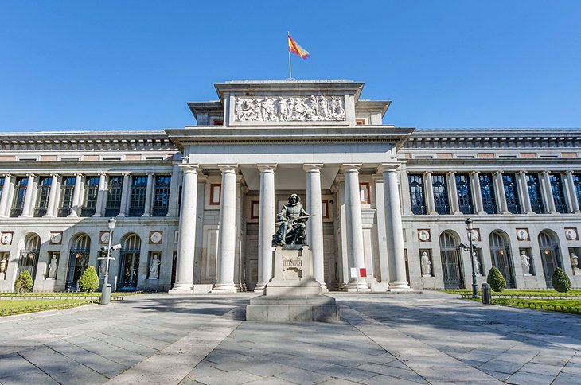
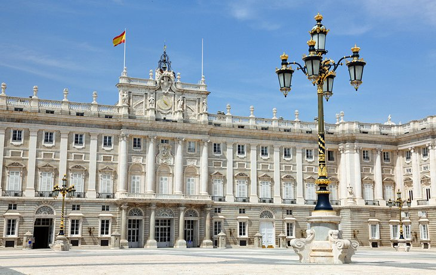
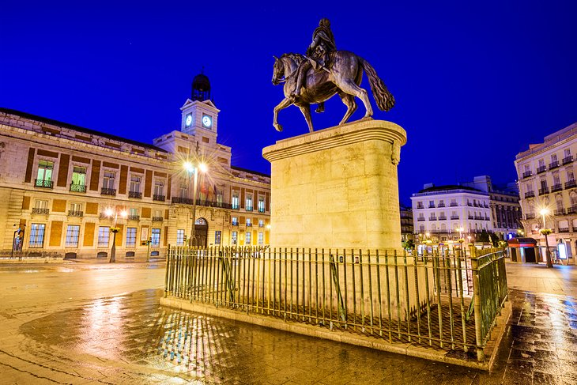
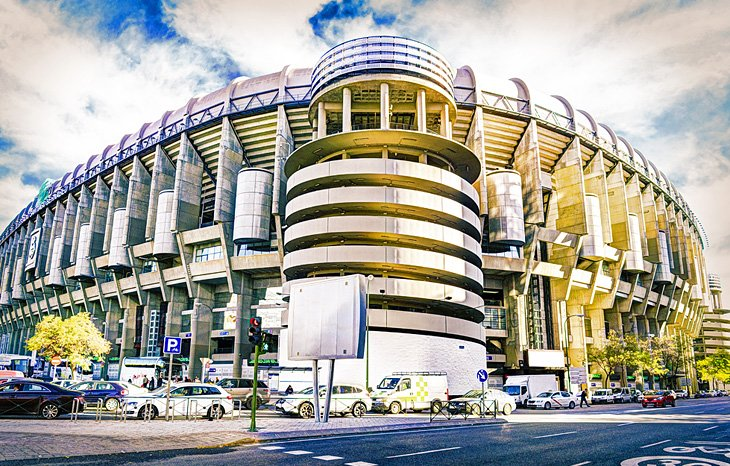
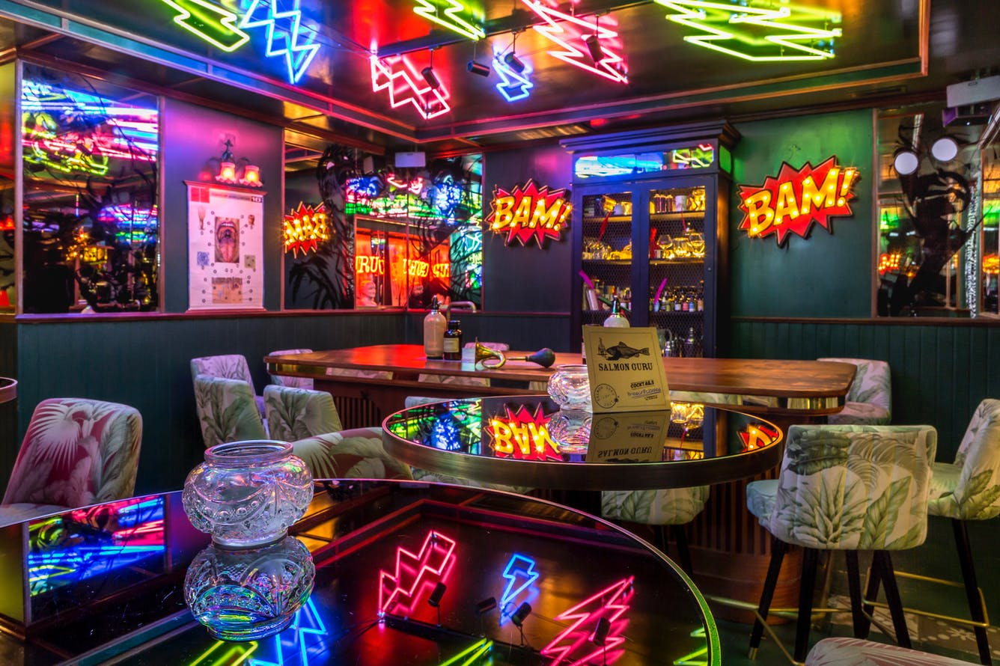
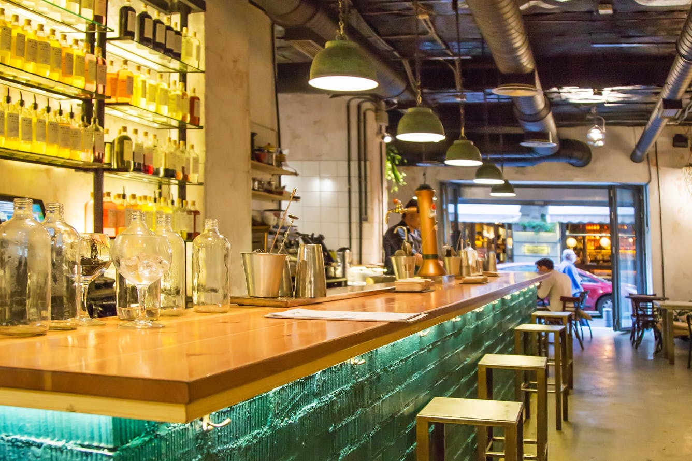

On this humble site i would like to show you just a taste of what i like so much about madrid
Who are you Madrid?
Madrid is the capital and most populous city of Spain.
The city has almost 3.4 million inhabitants and a metropolitan area population of approximately 6.7 million. It is the second-largest city in the European Union.
Madrid is the European city with the highest number of trees and green surface per inhabitant and it has the second highest number of aligned trees in the world, with 248,000 units.
also madrid is a very liberal city and is one of the best LGBTQ+ destinations in the world, and its annual Pride celebrations are usually attended by thousands of people (link above) .
and the most important, madrid is very beautifull city with lots of great sites, good food and full of nightlife.
5 sites you dont want to miss in Madrid
Prado Museum - A truly world-class museum, the Prado Museum has a collection of more than 8,000 paintings and 700 sculptures. Among its extensive assortment of artworks are many masterpieces, including celebrated paintings that rival the most famous works of the Louvre Museum in Paris .

Buen Retiro Park - The Buen Retiro Park (Parque del Retiro) is an oasis of peace in the heart of Madrid. This lush and beautifully manicured park offers an escape from the hustle and bustle of the city. The park encompasses more than 140 hectares and is shaded by over 15,000 trees.
Royal Palace and Gardens - This grandiose palace is the Spanish version of Versailles, a royal court designed to impress. However unlike Versailles, which is now just a museum, the Royal Palace of Madrid is still the official residence of a monarch (the King of Spain) and continues to be used for official State events.

Puerta del Sol: The Heart of the City - The Puerta del Sol was named after the sun emblem on the old city gate, which formerly stood here.
the Puerta del Sol is also the "Kilometer Zero" point from which all distances on the Spanish national road network are measured.
Nowadays the square is a place to hang out and enjoy life. Lined with shops and cafés, the Puerta del Sol is still one of the liveliest squares in Madrid.

Estadio Santiago Bernabéu: Real Madrid's Stadium - Not all of Madrid's tourist attractions revolve around art. One of its most-visited museums draws football (soccer) fans to the stadium of the city's home team, Real Madrid.
Visitors can take a tour of the stadium, as well as the museum with displays of trophies, team artifacts, and temporary exhibits. Tours also give fans a chance to enjoy the view of the field from the top of the stadium.

5 great places to eat and drink in Madrid
Mercado de San Miguel - There are some things everyone should experience while in Madrid. One of them is checking out Plaza Mayor, followed by eating tapas and drinking a clara (half beer, half lemonade) at Mercado San Miguel, a popular covered food market right around the corner. Take a five-minute walk to La Mallorquina afterwards for their famous chocolate napolitanas.
Chocolatería San Ginés - If you’re grabbing dinner in the Centro neighborhood, Chocolatería San Ginés (open 24 hours) is the place to go for dessert. Take your pick between thin and crunchy or thick and soft churros (Spain’s answer to donuts), which come with a bittersweet dark chocolate sauce that’s so good you’ll want to drink it straight from the cup. You can take everything to go, or grab a seat downstairs - where it tends to be less crowded - and chug your chocolate without judgement.
Salmon Gurú - With its fluorescent lightning bolts and neon signs, walking into Salmon Guru is like stepping into a comic book while high on mushrooms. Although the name of this bar suggests you’ll be meeting salmon experts, you’re actually here for cocktails made with ingredients like nori seaweed syrup and baked apple froth. If you’re hungry, walk the nine minutes to La Barraca for a traditional paella, and then end the evening with mojitos at nearby Lateral or a glass of wine at the ME Hotel rooftop.

Macera - You’ve come to the right country if your go-to drink is gin and tonic, and while you can order one at any bar, Macera makes the best G&Ts in Madrid. Stop by before dinner if you want a quiet drink, or come around 1am when the bar becomes more of a party.

La Barraca - Paella is native to Valencia, so if you’re traveling to the coast on your trip, there is no need for you to keep reading. If not, then make sure to try the paella at La Barraca, which makes the best version in Madrid. There are 17 types to choose from - including a traditional Valencian paella with chicken and rabbit. If you’re with a group (and therefore have more stomach space), we’d also order the baby squid over risotto.